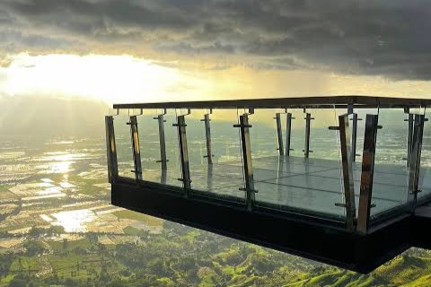
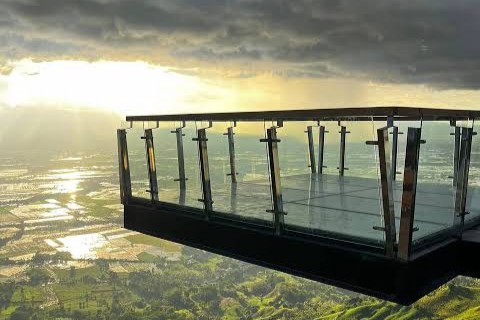

Valencia, Bukidnon
Perched quietly in the heart of Bukidnon, Mt. Anahon is the kind of mountain that proves adventure doesn’t have to be extreme to be unforgettable. Its trail invites hikers into a world of rolling hills, wide-open views, and the raw charm of the countryside. The climb is short and friendly, yet it still sparks that rush every nature lover craves.
At the summit, sweeping landscapes and cool winds reward every step, making it a favorite for sunrise chasers and first-time adventurers. With its peaceful terrain and scenic horizons, Mt. Anahon delivers a light, refreshing, and surprisingly exciting mountain escape.
Hike early in the morning to avoid the heat and make the most of daylight. Carry enough water and snacks for the moderate trek. Wear suitable shoes for rocky and grassy sections, and bring a light jacket in case of sudden weather changes. Inform someone about your hike for safety.
 

The trail is moderately challenging, so it’s best to hike with a companion or group. Stay on the main path and avoid shortcuts to prevent getting lost. Keep an eye on slippery or uneven terrain, especially near streams or muddy patches. Carry enough water, snacks, and a small first-aid kit for emergencies. Alert someone of your expected return for added security.
The trail to Mt. Anahon starts at the foothills and passes through forests and open grassy areas. Hikers will encounter gentle paths with some steeper sections along the way. Streams, rocks, and local plants make the hike interesting, while the summit offers panoramic views of the surrounding hills and mountains. Sturdy shoes and careful steps are recommended for a safe and enjoyable trek.
The highland climate of Mt. Anahon is generally cool and pleasant, especially in the mornings. Sudden showers are possible, so carrying a rain jacket is advised. Hiking in dry conditions ensures safer trails and better visibility for panoramic views.
Locally grown coffee for a morning boost.
Sticky rice snack often paired with hot chocolate.
Cool, sweet treat for hikers.
Tip: A local guide is recommended for first-time visitors to ensure safety and navigate the trails.